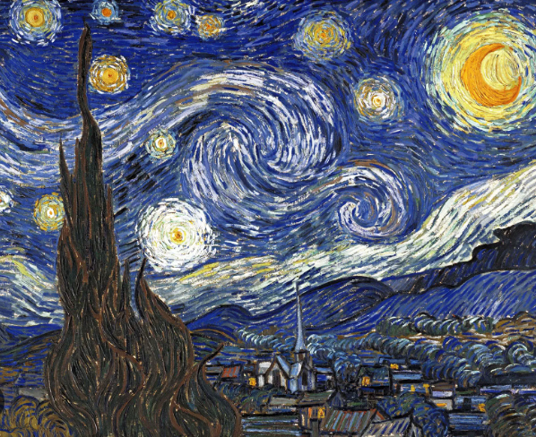

The Person I Admire
Vincent Willem van Gogh was a Dutch Post-Impressionist painter who is among the most famous and influential figures in the history of Western art.In just over a decade he created approximately 2100 artworks, including around 860 oil paintings, most of them in the last two years of his life. They include landscapes, still lifes, portraits and self-portraits, and are characterised by bold, symbolic colours, and dramatic, impulsive and highly expressive brushwork that contributed to the foundations of modern art. Only one of his paintings was known by name to have been sold during his lifetime. Van Gogh became famous after his suicide at age 37, which followed years of poverty and mental illness.
Van Gogh's early works consisted of mostly still lifes and depictions of peasant labourers. In 1886, he moved to Paris, where he met members of the artistic avant-garde, including Émile Bernard and Paul Gauguin, who were seeking new paths beyond Impressionism.
Van Gogh suffered from psychotic episodes and delusions. Though he worried about his mental stability, he often neglected his physical health, did not eat properly and drank heavily. His depression persisted, and on 27 July 1890, Van Gogh is believed to have shot himself in the chest with a revolver, dying from his injuries two days later.
Paintings
Stary Night
Sunflower